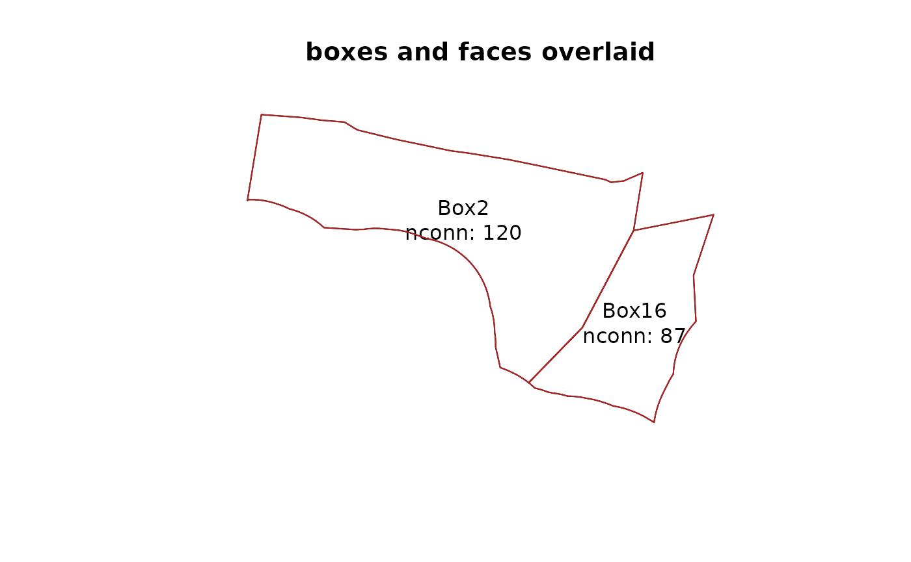

Box Geometry Model (BGM) files
Michael D. Sumner
2026-11-06
Source:vignettes/BGMfiles.Rmd
BGMfiles.RmdBox Geometry Model files
Box Geometry Model files are text files that store a spatially-explicit model domain used by the Atlantis Ecosystem Model.
The model domain consists of boxes (polygons) composed of faces (line segments) and an overall boundary that delimits the domain of the model.
The boundary will include boundary polygons that are not boxes in the model, but some box edges are on this boundary, for example some models bounded by land do not have boundary boxes on this edge.
The rbgm package includes tools to read the BGM format, returning tables of all X/Y vertices and tables of indices for the boxes and faces.
## [1] "vertices" "facesXverts" "faces" "facesXboxes"
## [5] "boxesXverts" "boxes" "boundaryvertices" "extra"Box and face attributes, and model topology
Both boxes and faces have attributes stored row-wise in the respective table.
These are the box attributes for this example
print(bgm$boxes)## # A tibble: 35 × 9
## label nconn botz area vertmix horizmix insideX insideY .bx0
## <chr> <int> <dbl> <dbl> <int> <int> <dbl> <dbl> <dbl>
## 1 Box0 7 -53.7 9254788445. 1 1 3430169. 3073000. 0
## 2 Box1 81 -48.9 1996056923. 1 1 3498567. 3029308. 1
## 3 Box2 120 -55.7 3922348664. 1 1 3521055. 3050400. 2
## 4 Box3 105 -53.4 3576072582. 1 1 3523085. 3077300. 3
## 5 Box4 83 -30 1672921591. 1 1 3522699. 3102469. 4
## 6 Box5 12 -24.1 411048577. 1 1 3496968. 3124359. 5
## 7 Box6 16 -10.2 447377917. 1 1 3520947. 3133926. 6
## 8 Box7 18 0 402661184. 1 1 3523883. 3122610. 7
## 9 Box8 13 -15 705100219. 1 1 3562646. 3115917. 8
## 10 Box9 3 -5.4 93312196. 1 1 3581060. 3127380. 9
## # ℹ 25 more rowsand these are the face attributes.
print(bgm$faces)## # A tibble: 824 × 7
## cosine sine left right length .fx0 label
## <dbl> <dbl> <int> <int> <dbl> <dbl> <chr>
## 1 0.112 0.994 34 32 29876. 0 face0
## 2 0.506 0.862 32 33 17891. 1 face1
## 3 0.116 0.993 34 33 10169. 2 face2
## 4 0.117 0.993 34 33 155. 3 face3
## 5 0.869 0.494 33 27 9391. 4 face4
## 6 0.118 0.993 34 27 12818. 5 face5
## 7 0.121 0.993 34 27 21316. 6 face6
## 8 0.276 0.961 32 33 25394. 7 face7
## 9 0.514 0.858 32 33 8425. 8 face8
## 10 0.136 0.991 32 30 14366. 9 face9
## # ℹ 814 more rowsBy using relations between these tables we can reconstruct the geometry appropriately. (This is pretty painful, but shows that we have all the information required.)
bgm$boxes %>%
filter(label %in% c("Box1", "Box11")) %>%
inner_join(bgm$boxesXverts, ".bx0") %>%
head()## # A tibble: 6 × 10
## label nconn botz area vertmix horizmix insideX insideY .bx0 .vx0
## <chr> <int> <dbl> <dbl> <int> <int> <dbl> <dbl> <dbl> <int>
## 1 Box1 81 -48.9 1996056923. 1 1 3498567. 3029308. 1 157
## 2 Box1 81 -48.9 1996056923. 1 1 3498567. 3029308. 1 178
## 3 Box1 81 -48.9 1996056923. 1 1 3498567. 3029308. 1 222
## 4 Box1 81 -48.9 1996056923. 1 1 3498567. 3029308. 1 219
## 5 Box1 81 -48.9 1996056923. 1 1 3498567. 3029308. 1 218
## 6 Box1 81 -48.9 1996056923. 1 1 3498567. 3029308. 1 217Convert to Spatial objects
To avoid constructing boxes and faces manually, rbgm
provides several helper functions to create the boxes, faces,
coordinates, and boundary as Spatial objects from the
sp package.
Since Spatial objects cannot store the full connectivity of the BGM structure, it is best to consider these as one-way conversions, keeping all the details in the raw tables as above.
To generate an object with just “Box1” and “Box11”, use the function
boxSpatial and then subset on box labels.
boxes <- subset(boxSpatial(bgm), label %in% c("Box2", "Box16"))To determine which faces belong to these boxes, first create all faces and then join.
allfaces <- faceSpatial(bgm)
faces <- allfaces[match(bgm$facesXboxes$iface[which(bgm$facesXboxes$.bx0 %in% boxes$.bx0)], allfaces$.fx0), ]Plot the two layers together.
plot(boxes, main = "boxes only")
text(coordinates(boxes), lab = sprintf("%s\nnconn: %s", boxes$label, boxes$nconn))
plot(boxes, main = "boxes and faces overlaid")
text(coordinates(boxes), lab = sprintf("%s\nnconn: %s", boxes$label, boxes$nconn))
plot(faces, col = c("firebrick"), lwd = 1, add = TRUE)
(Future releases will provide simpler tools to do this kind of matching).